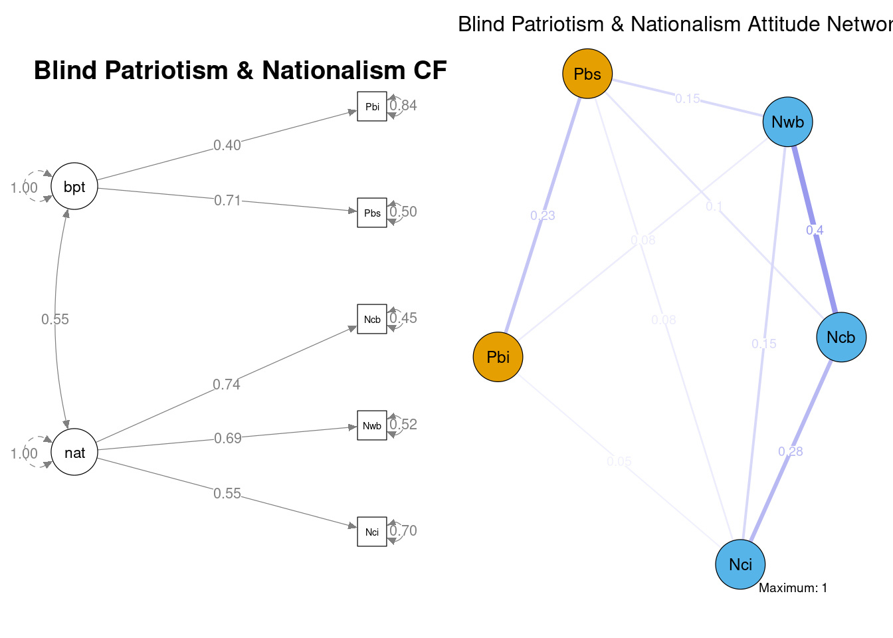
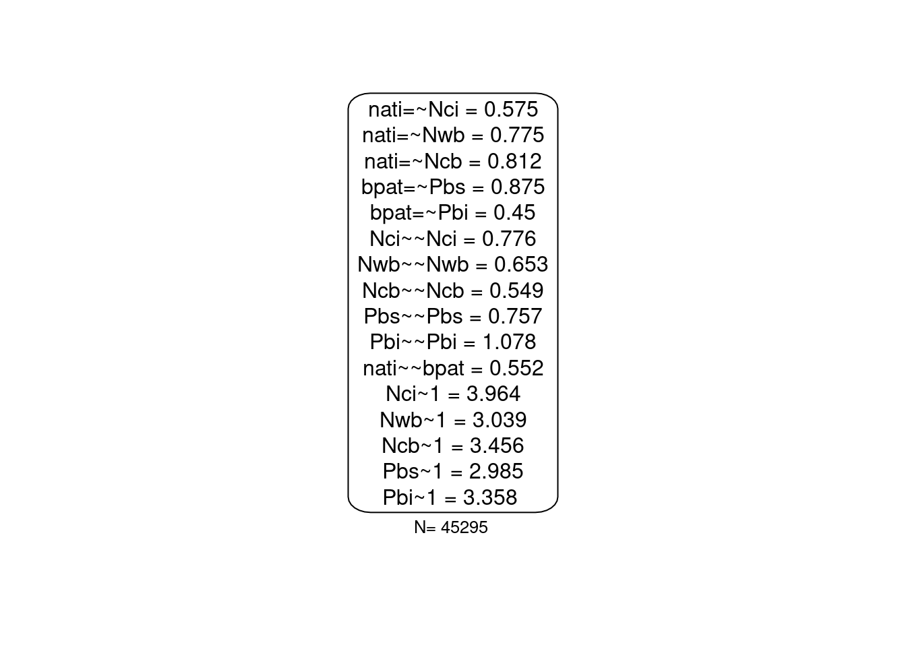
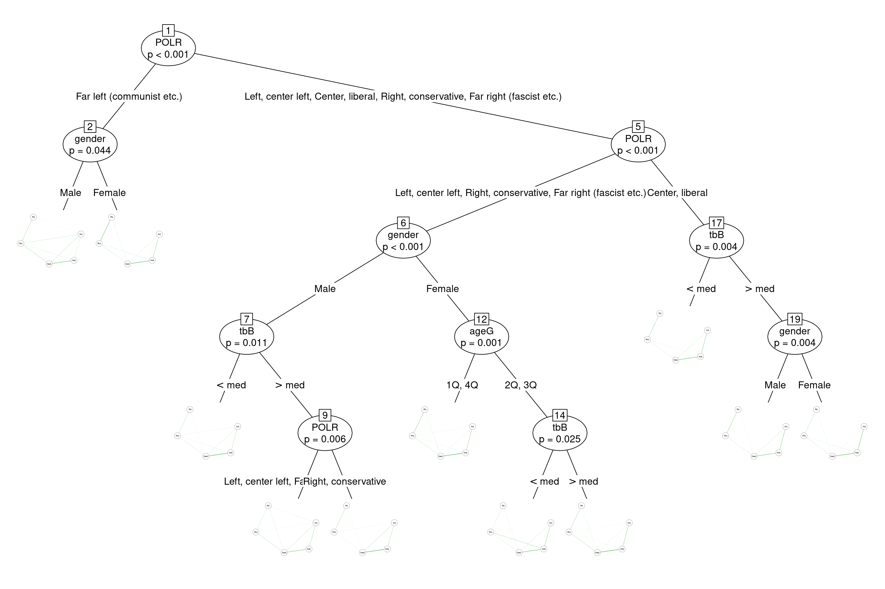

In the last five years or so, there have been several exciting new developments within the broader psychometrics research applications. As a practitioner, I find the combination of tree-based methods with structural equation modeling, and with attitude networks very appealing. These are great approaches both for data-mining and inference. See this and this.
One related question I got during a workshop on attitude networks got me really curious. But let me take a step back and provide a brief background first: there is also very interesting and rapidly growing literature and debate on the equivalence, meaning, applications and implications of SEM & network modeling with attitudinal data (see Bringmann & Eronen, 2018; Dalege, Borsboom, Harreveld, & Maas, 2017; Epskamp, Rhemtulla, & Borsboom, 2017; Fried, 2017; Guyon, Falissard, & Kop, 2017; Kruis & Maris, 2016; Marsman et al., 2018).
With oversimplification, it can be said that “on empirical grounds, attitude networks and latent trait models correspond to one another”. Given certain assumptions, “latent trait models and network models based on attitudinal data are mathematically equivalent” and complementary. “Each latent trait model has an equivalent network model that fits the data equally well and vice versa”. “The differences between latent trait models and attitudinal network models lie in the drawn inferences”, and theoretical basis and “one does not necessarily negate the other”.
Guided by the question I got, and driven by my curiosity I wanted to apply a model-based recursive partitioning to the same measurement model after seeing it as a CFA and attitude network. The measurement model at hand is straight-forward and theory-driven. Nationalism (nat) is influencing responses to the three following survey-items, and blind patriotism (bpt) is influencing two survey-items (see Otten & Cohrs, 2010).
| Latent Construct | variable | item wording |
|---|---|---|
| Nationalism: | Nci | I would rather be a citizen of [COUNTRY] than of any other country in the world |
| Nationalism: | Nwb | The world would be a better place if people from other countries were more like the [COUNTRY NATIONALITY] |
| Nationalism: | Ncb | Generally speaking, [COUNTRY] is a better country than most other countries |
| Blind Patriotism: | Pbs | People should support their country even if the country is in the wrong |
| Blind Patriotism: | Pbi | [COUNTRY] should follow its own interests, even if this leads to conflicts with other nations |
The data comes from ISSP’s National Identity Module III. The following is the output after some basic data-prep. Given the brief background above, we got no surprise. The measurement model is pretty good (also significantly better than a uni-factor ethnocentrism model), and the latent variable structure & the attitude network communities (estimated with walktrap algorithm) correspond to one another.

## chisq df pvalue
## 444.868 4.000 0.000
## chisq.scaling.factor cfi.robust tli.robust
## 1.164 0.986 0.966
## rmsea.robust rmsea.pvalue.robust rmsea.ci.lower.robust
## 0.049 NA 0.045
## rmsea.ci.upper.robust rmsea.pvalue srmr
## 0.054 0.577 0.016What is surprising is that when I split these models with the same variables (gender, age group transformed into quartiles, left-right orientation operationalized as vote-recall and reporting to feel at the top or the bottom of the society – again dichotomized by the median), semtree does not find any sub-groups but networktree does. See the following.
The first is the output of semtree that finds no heterogeneity in the data; the hyperparameters arguments are
tr_sem.control <- semtree.control(alpha=0.05,
bonferroni=T,
min.N=20,
alpha.invariance=0.05,
method="naive",
exclude.heywood=T)
Unlike the semtree, networktree estimates quite the heterogeneity.

The most important variable seems to be the left-right orientation. Those who have reported voting for the communist parties have a significantly different national identity network compared to the rest. On the right side of the plot, the center (liberal) and the rest are significantly different from one another. For those who voted for the center parties, feeling at the top or the bottom of the society makes a difference – here, there is also a significant difference between males and females who feel at the top of the society. For those who voted for the center-left, conservative, and far-right, there is also a gender difference. In this cluster, for men, the order of the split is feeling at the top or the bottom of the society and left-right differences again. For women, the age group is more influential than feeling at the top or the bottom of the society. If I were to interpret these findings, I probably would have turned to evolutionary differences in gender and domination tendencies and how these probably are associated with voting tendencies and different perceptions of national identity. However, I’m not going to do that. Although the findings of the attitude network tree are not that surprising and new per se, the estimation differences between sem-tree & network-tree are obvious. Networktree estimation seems to be less prone/sensitive to over-parameterization issues. Plus, there is definitely a lot of room to go in the latent variable modeling vs. attitude network modeling discussion.
Bringmann, L. F., & Eronen, M. I. (2018). Don’t blame the model: Reconsidering the network approach to psychopathology. Psychological Review, 125(4), 606-615. doi:10.1037/rev0000108
Dalege, J., Borsboom, D., Harreveld, F. v., & Maas, H. L. J. v. d. (2017). Network Analysis on Attitudes:A Brief Tutorial. Social Psychological and Personality Science, 8(5), 528-537. doi:10.1177/1948550617709827
Epskamp, S., Rhemtulla, M., & Borsboom, D. (2017). Generalized Network Psychometrics: Combining Network and Latent Variable Models. Psychometrika, 1-24. doi:10.1007/s11336-017-9557-x
Fried, E. I. (2017). What are psychological constructs? On the nature and statistical modelling of emotions, intelligence, personality traits and mental disorders. Health Psychology Review, 11(2), 130-134. doi:10.1080/17437199.2017.1306718
Guyon, H., Falissard, B., & Kop, J.-L. (2017). Modeling Psychological Attributes in Psychology – An Epistemological Discussion: Network Analysis vs. Latent Variables. Frontiers in Psychology, 8, 798. doi:10.3389/fpsyg.2017.00798
Kruis, J., & Maris, G. (2016). Three representations of the Ising model. Scientific Reports, 6, 34175. doi:10.1038/srep34175
Marsman, M., Borsboom, D., Kruis, J., Epskamp, S., van Bork, R., Waldorp, L. J., . . . Maris, G. (2018). An Introduction to Network Psychometrics: Relating Ising Network Models to Item Response Theory Models. Multivariate Behavioral Research, 53(1), 15-35. doi:10.1080/00273171.2017.1379379
Otten, S., & Cohrs, J. C. (2010). Nationalism and patriotism. In JM Levine, MA Hogg, Encyclopedia of Group Processes and Intergroup Relations: Sage.
Updated about a year later↩︎